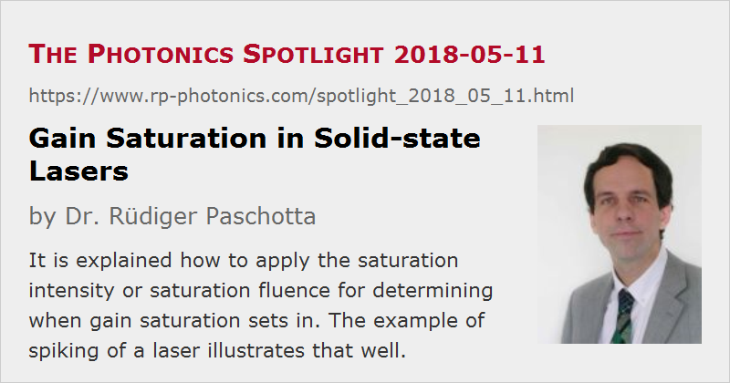

Gain Saturation in Solid-state Lasers
Posted on 2018-05-11 as a part of the Photonics Spotlight (available as e-mail newsletter!)
Permanent link: https://www.rp-photonics.com/spotlight_2018_05_11.html
Author: Dr. Rüdiger Paschotta, RP Photonics Consulting GmbH
Abstract: It is explained how to apply the saturation intensity or saturation fluence for determining when gain saturation sets in. The example of spiking of a laser illustrates that well.

It is well known that gain saturation is an important phenomenon in lasers. However, people are often confused about the details. For example, a gain medium has a saturation intensity as well is a saturation fluence – but which of those should now be applied to determine where saturation sets in?
Spiking of a Laser
As an example, consider a solid-state laser (e.g. a Nd:YAG laser) where the pump power is suddenly switched on. The laser will not immediately reach its final output power, but rather emit essentially nothing for some time, then a sequence of intense spikes (i.e., a strong “overshooting” of the power), and finally it reaches the steady state after some damped relaxation oscillations (see Figure 1).
Let us now consider the leading part of the first emitted spike (pulse). Do you think that substantial gain saturation will occur as soon as the intensity within the gain medium reaches the saturation intensity? It turns out that this is not the case; at this point, the gain is hardly saturated at all, and the output power continues to rise exponentially. The gain is even still rising, assuming that we are still pumping the laser. Only at a later time, when the saturation intensity is far exceeded, the gain will eventually saturate.

Why is that? The saturation intensity is a quantity which applies to the steady state of laser amplification. An intensity of that magnitude will cause substantial saturation – but not when it is applied only for a short while, i.e., for duration far below the upper-state lifetime. Exactly that is the case here: the initial spikes emitted by such lasers typically have sub-microsecond durations, which are orders of magnitude shorter than the upper-state lifetime (e.g. 230 μs for Nd:YAG). In that regime, we obtain substantial gain saturation only once the pulse fluence reaches the order of the saturation fluence. To remind you, the fluence in the gain medium is the time-integrated optical intensity. For an intuitive picture, each excited laser ion must have seen a sufficiently high total number of photons coming by before it has a reasonable chance to be pushed back to the ground state.
Further, the saturation intensity is the saturation fluence divided by the upper-state lifetime. The latter is relatively long for most solid-state laser gain media (sometimes even several milliseconds). Therefore, it takes long to get substantial gain saturation when the intensity is only around the saturation intensity.
We can conclude that in such a laser the current magnitude of gain is not determined only by the current magnitude of pump and laser intensity. Instead, we have relatively slow gain dynamics. In a simplified model, one can describe the gain and power dynamics with two dynamic variables – the laser gain and the intracavity power, for example – the temporal evolution of which is determined by coupled differential equations. From those equations, one can calculate the details of relaxation oscillations, for example.
Semiconductor Lasers
By the way, semiconductor lasers behave quite differently; they have a far lower upper-state lifetime (here normally called carrier lifetime): it is often of the order of 1 ns only. That implies that if you turn on the pump power within a microsecond, for example, the output power of such a laser will just follow the rise of pump power – with no substantial overshooting or even oscillations.
Laser Modeling
Obviously, a correct treatment of gain saturation is essential in the context of laser modeling. Well, there are actually cases where an “incorrect” treatment of gain saturation is more advantageous. For example, one often numerically simulates the evolution of an ultrashort pulse in a mode-locked solid-state laser only to find the steady state; one is often not interested in the pulse energy dynamics. In such a case, relaxation oscillations are just a nuisance. In the model, one can suppress them by (incorrectly) assuming that the laser gain depends only on the current pulse energy, i.e., that the laser gain instantly adjusts to the pulse energy. One then find the wanted steady state without simulating so many resonator round-trips of the pulse.
This article is a posting of the Photonics Spotlight, authored by Dr. Rüdiger Paschotta. You may link to this page and cite it, because its location is permanent. See also the RP Photonics Encyclopedia.
Note that you can also receive the articles in the form of a newsletter or with an RSS feed.
Questions and Comments from Users
Here you can submit questions and comments. As far as they get accepted by the author, they will appear above this paragraph together with the author’s answer. The author will decide on acceptance based on certain criteria. Essentially, the issue must be of sufficiently broad interest.
Please do not enter personal data here; we would otherwise delete it soon. (See also our privacy declaration.) If you wish to receive personal feedback or consultancy from the author, please contact him e.g. via e-mail.
By submitting the information, you give your consent to the potential publication of your inputs on our website according to our rules. (If you later retract your consent, we will delete those inputs.) As your inputs are first reviewed by the author, they may be published with some delay.
|  |
If you like this page, please share the link with your friends and colleagues, e.g. via social media:
These sharing buttons are implemented in a privacy-friendly way!